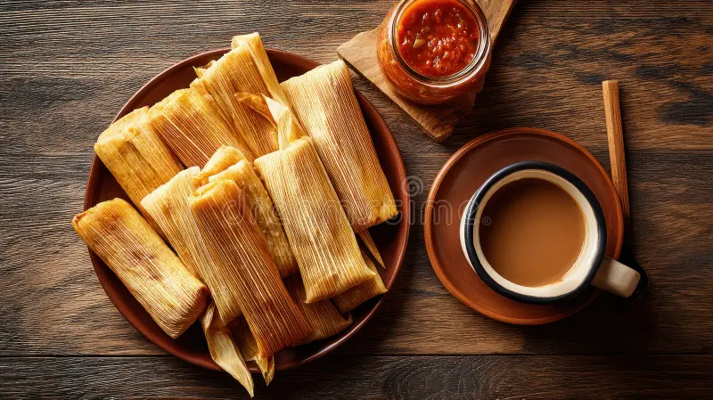

Raíces ancestrales
El tamal tiene raíces en las antiguas culturas mesoamericanas. En El Salvador, su preparación se ha mantenido como parte de las tradiciones gastronómicas transmitidas de generación en generación.

Los tamales salvadoreños son un alimento tradicional preparado principalmente con masa de maíz, que puede llevar diferentes rellenos como pollo, cerdo, frijoles o verduras. La masa y el relleno se envuelven en hojas de plátano y se cocinan al vapor, dando como resultado un platillo lleno de sabor y tradición.
Conoce la historia, preparación y tradición de uno de los platillos más representativos de la gastronomía salvadoreña.
El tamal tiene raíces en las antiguas culturas mesoamericanas. En El Salvador, su preparación se ha mantenido como parte de las tradiciones gastronómicas transmitidas de generación en generación.

Se prepara con masa de maíz y diferentes rellenos, como pollo, cerdo, frijoles o verduras. La mezcla se coloca sobre hojas de plátano, se envuelve y posteriormente se cocina al vapor.

Los tamales forman parte de las reuniones familiares y celebraciones salvadoreñas. Su preparación suele convertirse en una actividad familiar donde varias generaciones participan en su elaboración.
Lugares donde puedes disfrutar de los tradicionales tamales salvadoreños.

En diferentes comedores y negocios de comida típica puedes encontrar tamales preparados de manera tradicional y acompañados de otros alimentos salvadoreños.
Contacto:
Consulta directamente con el establecimiento.
Horario:
Depende del establecimiento.

Los mercados municipales son lugares donde se puede encontrar una gran variedad de comida típica, incluyendo tamales preparados de forma tradicional.
Contacto:
Consulta directamente con el mercado.
Horario:
Depende del mercado.

Algunos restaurantes especializados en gastronomía salvadoreña ofrecen diferentes tipos de tamales, ideales para disfrutar de los sabores tradicionales del país.
Contacto:
Consulta sus canales oficiales.
Horario:
Confirma la atención directamente.